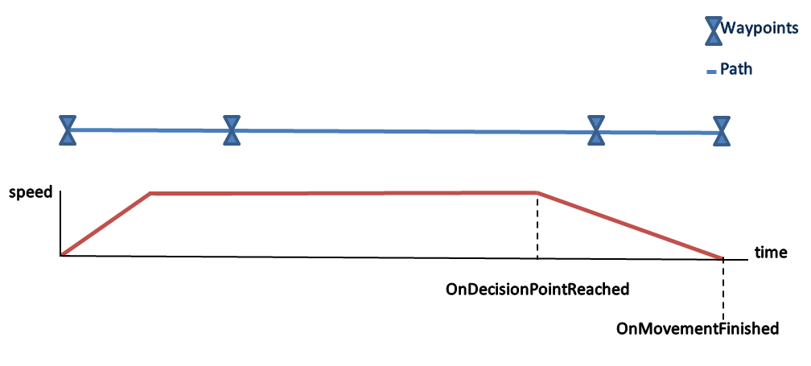

vcSimVehicle allows you to simulate a component as a moving vehicle.
Inherits: vcBehaviour
A vcSimVehicle object should be located in the root node of a component. When speed, acceleration and deceleration factors are set, the vcSimVehicle object will automatically handle the movement and orientation of a component to reach a given target.
As a vehicle, a component can be made to rotate in place, attach and detach wagons, lead or follow other vehicles, and alter its course.

Contents Hide
| Name | Type | Access | Description |
| Acceleration | Real | RW | Defines the maximum acceleration (mm/s^2) of vehicle. That is, how fast vehicle can speed up. |
| Deceleration | Real | RW | Defines the maximum deceleration (mm/s^2) of vehicle. That is, how fast vehicle can slow down. |
| DecisionTime | Real | R | Gets the amount of time it will take vehicle to execute a movement and reach decision point of calculated motion path.
A decision point is the point at which vehicle will decelerate to stop at target. In some cases, a decision point is used to evaluate a vehicle and target location. For example, you may want to simulate vehicle routing and intersection crossing as well as evaluate if another vehicle is at target location. |
| Interpolation | Real | W | Sets the tension (0 - n) of calculated motion path for vehicle to reach target.
(Optional) Default value is 0, which will result in straight lines from each waypoint of path. The bigger the value, the longer the vehicle will navigate along the tangents of waypoints. |
| LengthIterations | Integer | W | Sets the number of iterations for each path segment when calculating Bezier path length.
(Optional) Default value is 10. More iterations take longer to compute but give more precise results. |
| MaxSpeed | Real | RW | Defines the maximum speed (mm/s) of vehicle. That is, the top speed of vehicle. |
| OffsetMatrix | vcMatrix | W | Sets an offset for vehicle origin and orientation.
(Optional) Default is containing node's origin. In some cases, you may want to retain orientation of vehicle when moving in reverse or along an elevated path. |
| PathLength | Real | R | Gets the length of motion path vehicle will use to reach a target. |
| TotalTime | Real | R | Gets the total travel time of vehicle to reach a target using calculated path. |
Note:
| Name | Return Type | Parameters | Description |
| addControlPoint | None | vcVector point | Adds a given point to end of vehicle path. |
| addOrientationPoint | None | vcVector vector | If Interpolation is not zero, adds a given vector to vehicle in order to calculate vehicle orientation at its last control point.
This method should be called immediately after adding control points to vehicle path. A given vector is not added to path. |
| attachWagonAtTheEnd | None | vcComponent component, [Real distance] | Attaches a given component to vehicle as a wagon.
If no previous wagons, component is added as lead wagon. Otherwise, component is attached to last wagon added to vehicle. An optional distance argument can be given to offset distance component is attached to vehicle. By default, the method will use distance of component to vehicle at time of call. |
| calculateDecisionTimeToStopAt | Real | Real distance | Returns the total simulation time at which vehicle would need to decelerate (decision point) to stop at a given distance in calculated motion path. |
| calculateEnterExitBox | 2-tuple (Real entry_distance, Real exit_distance) | vcVector Center, vcVector P1, vcVector P2, Real distStartAt, Real precision | Returns the distance at which vehicle would enter and exit a box based on calculated path, starting distance of vehicle and a given precision.
The Center, P1 and P2 arguments define box. The returned distances will be within one-half of precision to the theoretical intersection. |
| calculateFinishedTimeToStopAt | Real | Real distance | Returns the calculated total simulation time that vehicle will stop at a given distance based on calculated path. |
| calculateOffsetPathLength | Real | vcVector offset | Returns the length of calculated path for vehicle based on a given offset. |
| calculatePositionAt | 2-tuple (vcVector position, vcVector direction) | Real time, Integer isElapsedTime | Returns the position and direction of vehicle at a given time based on calculated path.
If isElapsedTime argument is 0 (default), a given time is the elapsed time since start of vehicle movement. Otherwise, given time is elapsed time since start of simulation. |
| calculatePositionWithDistance | 1-tuple (vcVector position) | Real distance | Returns the position of vehicle at a given distance in calculated path.
The returned value is a tuple in which first element is position vector. |
| calculateSpeedAt | Real | Real time, Integer isElapsedTime | Returns the speed of vehicle on calculated path at a given time.
If isElapsedTime argument is 0 (default), a given time is the elapsed time since start of vehicle movement. Otherwise, given time is elapsed time since start of simulation. |
| calculateTravelWithTime | Real | Real time, Integer isElapsedTime | Returns the distance traveled by vehicle on calculated path at a given time.
If isElapsedTime argument is 0 (default), a given time is the elapsed time since start of vehicle movement. Otherwise, given time is elapsed time since start of simulation. |
| clearMove | None | None | Removes all points from calculated path of vehicle, thereby stopping vehicle movement.
This method should be called at start of simulation before any control points are added to vehicle. |
| clearPassedPoints | None | None | Removes points from calculated path that have been reached by vehicle, thereby resetting the origin of calculated path and its length. |
| detachAllWagons | None | None | Detaches all wagons from vehicle and one another.
This method should be called when simulation is reset; otherwise components will remain attached to one another. |
| getControlPointDistance | Real | Integer controlPointIndex | Returns the distance of a control point at a given index in vehicle based on calculated path.
Note: If wagons are attached to vehicle, there will be control points with negative distances. |
| offsetPath | none | vcVector offset | Offsets the calculated path of vehicle parametrically (X-axis is tangent, Y-axis is radial, Z-axis is up).
This method should be called after adding points to vehicle. |
| rePlan | None | None | Clears all points from vehicle except those between vehicle and its wagons, thereby allowing you to replan route of vehicle using current speed, position and orientation. That is, the vehicle will not stop rather reroute itself to newly added control points. |
| resetStopAtDistance | None | Real distance | Instructs vehicle to stop at a given distance on calculated path.
This method allows you stop vehicle and recalculated route using same or different control points. |
| rotateInPlace | None | Real angle, Real angularSpeed, Real angularAcceleration, Real angularDeceleration | Rotates vehicle by a given angle using given angularSpeed, angularAcceleration and angularDeceleration arguments.
Rotation will trigger OnMovementChanged and OnMovementFinished events. To ensure rotation is completed, use a delay, event or trigger before adding new control points to vehicle. |
| update | None | Real time | Updates the position of objects controlled by vehicle. |
| Name | Parameters | Description |
| OnDecisionPointReached | vcComponent component, Real time | Triggered when vehicle starts to decelerate in order to stop at target. That is, vehicle reaches decision point.
The component of vehicle and time of occurrence are passed to event. |
| OnFinalDestinationReached | vcComponent component, Real time | Triggered when vehicle reaches last target. That is, vehicle reaches last control point, and then stops with no more targets in queue.
The component of vehicle and time of occurrence are passed to event. |
| OnMovementChanged | vcComponent component, Real time | Triggered when vehicle route is modified, for example points cleared or added to vehicle or change in stop distance.
The component of vehicle and time of occurrence are passed to event. |
| OnMovementFinished | vcComponent component, Real time | Triggered when vehicle reaches target.
The component of vehicle and time of occurrence are passed to event. |
Example. Control vehicle speed and set control points
| from vcScript import * import vcVector #define the vehicle's properties either at the start or execution of the simulation #properties like PathLength should be called after adding points or rotating an object #add points during the OnRun event directly or by calling a function or event def OnRun(): comp = getComponent() app = getApplication() vehicle = comp.findBehaviour("Vehicle") vehicle.clearMove() #clears all previously added control points vehicle.Acceleration = 2000 vehicle.Deceleration = 2000 vehicle.MaxSpeed = 1200 vehicle.Interpolation = .35 # this affects how sharp the curve is in corners #wagons (uncomment next 3 lines if needed) #vehicle.detachAllWagons() #vehicle.attachWagonAtTheEnd(wagon, 1600) #wagon = app.findComponent('wagon') #preferred method is to reference the positions of different components #another way is to create a component with Frame features v1 = vcVector.new(5000,2000,0) v2 = vcVector.new(-2000,-2000,0) v3 = vcVector.new(-5000,4000,0) for vec in [v1,v2,v3]: vehicle.addControlPoint( vec ) |